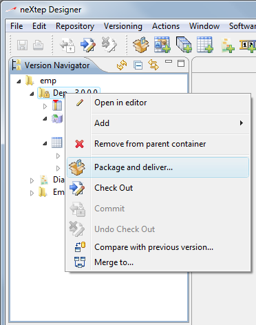
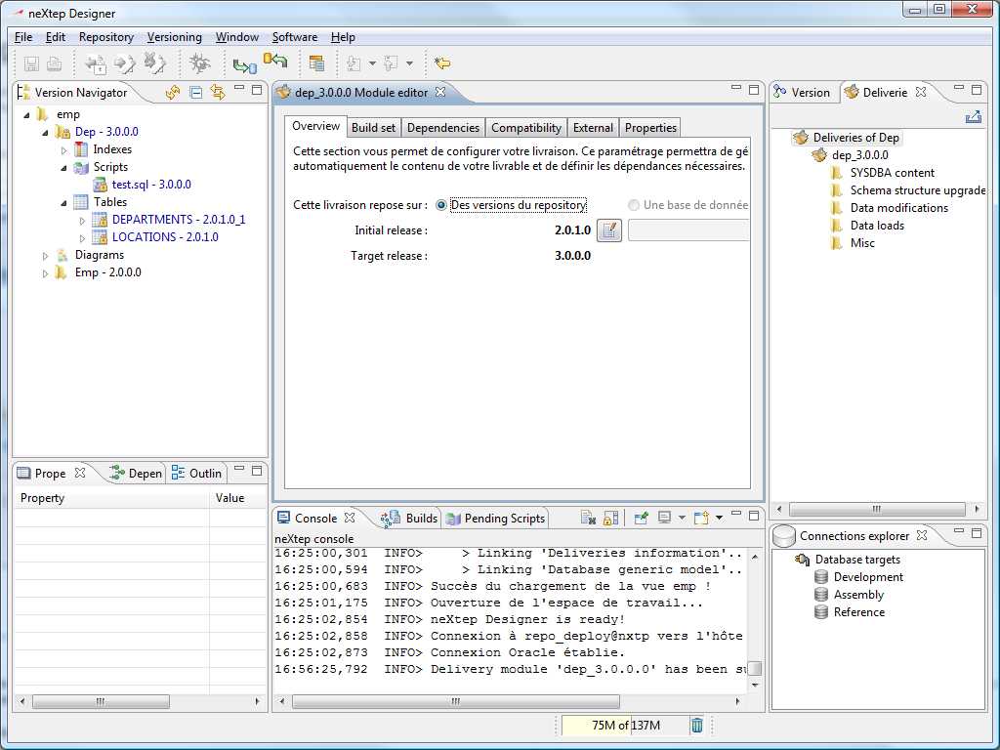
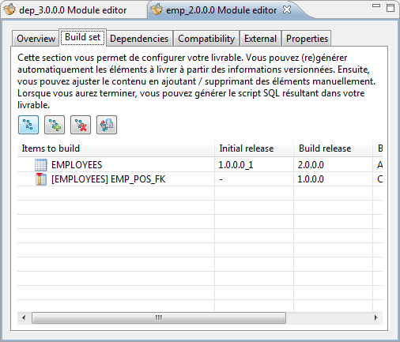
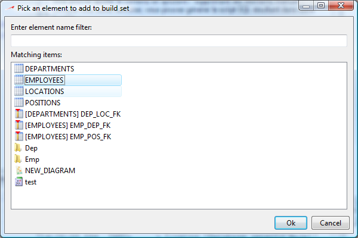
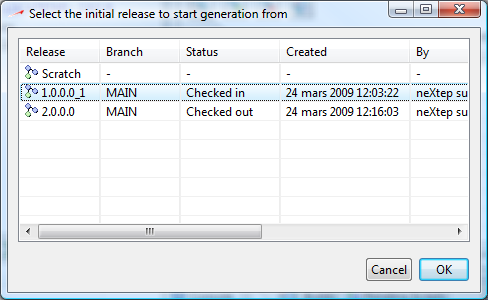
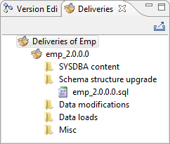
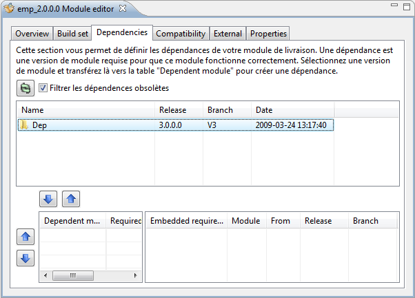
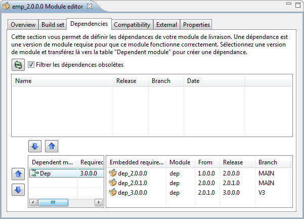
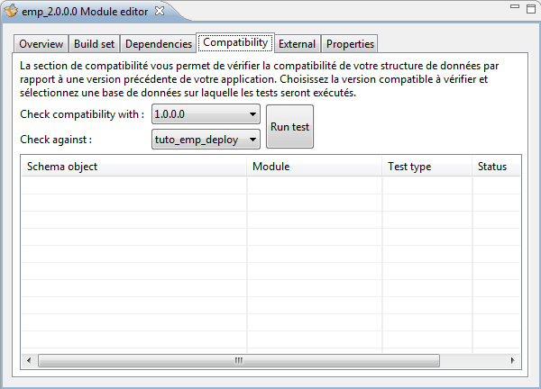
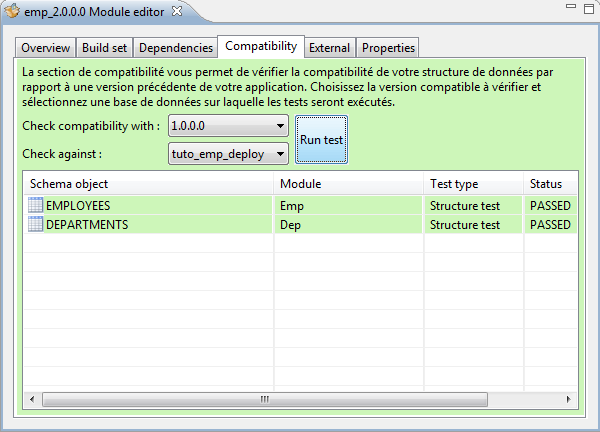

Deliveries are connected to root modules (also called root containers). A root module is a module which is not embedded in another, that is to say which appears at the root level of a view.
As soon as you have a module, you can define a delivery. As soon as you have your delivery ready, you can deploy your changes on another database.
To create a delivery on a module, right click on the module and select Package and deliver.

A new delivery creation wizard will come up with the settings for your new delivery. If a delivery already exists for the module you clicked on, the delivery editor will open to edit the current module instead of the wizard. The delivery editor will look exactly the same as this wizard.
As you can see below the delivery editor is composed of several tabs which contains different sections for configuring your delivery.

In the overview tab you select your initial and target release for this delivery. In most cases, this will be pre-defined when you create the delivery module but you may need to alter the settings.
The initial release is the release on which this delivery can apply. There can be one and only one initial release. If you try to deploy a delivery on a database which is not in the initial release, it will fail and will install nothing.
The target release is the release this delivery will install if the deployment is successful. It corresponds to the container's current release in your current view.
This is where you configure the elements to deploy. At first, the “Items to build” table will always be empty. NeXtep designer will help you compute the contents automatically through the first “Compute build set” button.
You will then see something like :

The “compute build set” button computes differencies between the initial release and the target release of this delivery module to inject modified elements into the build set, making them listed in the table.
You can choose to add or remove some items manually if you want to make neXtep Designer generate corresponding SQL scripts. When adding a User item, you will be prompted for the item through a filtering dialog containing buildable items :

And finally you will be prompted for the initial release you want to use :

Then, you can click on the “Generate build scripts into module” which will take the “Items to build” list and generate the corresponding SQL script to your delivery module. After clicking this button, you will see that a new script now appears in the deliveries view which contains the SQL-representation of the upgrade actions to perform.

Dependencies allows you to define relationships between different module deliveries. As you have seen in the Build set section, you can only define the contents of the module you deliver. But this module may need other modules to work correctly. These other modules are called dependencies.
You can define the modules releases your module depends on through the dependencies tab.
If you haven't defined any dependency yet, the top table will list eligible dependencies which are container releases which are present in your current view minus the container you are delivering.
You add a dependency by clicking the down arrow under the table which will make the module release appear in the bottom left table. You remove a dependency by selecting it in the bottom left table and clicking the up arrow above.

Once added, your dependency may be resolved or not. A dependency is resolved when neXtep designer is able to find a chain of deliveries capable of upgrading this dependency from the initial release to the release you indicated.
If this is your first delivery, the system must find deliveries which can generate the dependency module from nothing to the current release. This might corresponds to several releases. The delivery chain the system has found is listed in the bottom right table when you click on the dependency in the bottom left table.
If this is not your first delivery, the system will analyze your previous delivery of the container, find the dependency module release in this previous delivery and will look for a set of deliveries capable of migrating this initial release to the release you indicate (generally the current view's release).

For this delivery of the “Emp” module, we can see that we defined a dependency to the Dep module in release 3.0.0.0. This will tell the delivery that the Dep module release 3.0.0.0 is required before being able to install the current delivery.
Now we can see in the bottom right table that this dependency corresponds to a chain of 3 deliveries which can upgrade the component Dep from release 1.0.0.0 to the release 3.0.0.0. This means that our previous Emp delivery had a dependency to the Dep module in release 1.0.0.0 and this time we need to upgrade it to a 3.0.0.0 before deploying our Emp module release 2.0.0.0.
In some cases, you might see an error message in the bottom right table like “Missing delivery chain”. That means that the system could not resolve a chain of deliveries capable of upgrading the dependency from its initial version to the current one. The error message will indicate which increment is missing in its From / Release columns. To fix the problem you will need to generate the deliveries (or ask other teams to provide the deliveries) for this version upgrade.
This folder is a bit specific as it does not directly impact your delivery contents. Instead, it will check the compatibility of the database schema you are about to deliver with the initial release. Many organizations require backward compatibility of the database structure to be able to safely upgrade the database and the application during distinct moments.

Here you can check this assertion by executing compatibility tests. You specify the release to check compatibility with and select a database target to check. Typically the database target specified in the Check against combo will be your current development database (which should be synchronized with your repository).
When you click on run tests, the compatibility release will be loaded and its structure will be used by the system to inject SQL-test statements to the targetted database and will show you the results in the table.
When you have Oracle packages, tests will be made (in repository) against compatibility and current releases to check if all procedures declarations of the current release are compatible with previous procedures declaration. The test is only indicative.

The screenshot above shows you a compatibility on the very simple component Emp.
This tab folder is deprecated and will be removed very soon.
This tab folder allows you to define some additional properties to your delivery. Currently, there is only one property you can define : First neXtep delivery. This property is required when you want to install neXtep delivery packages to an existing database application which has not been created from scratch with neXtep designer. It tells the installer to assume the initial delivery indicated in this delivery is the one present on the target database.
This will make the target database a neXtep managed database, use with care as the installer will have no way of knowing that the assumption is true or false.